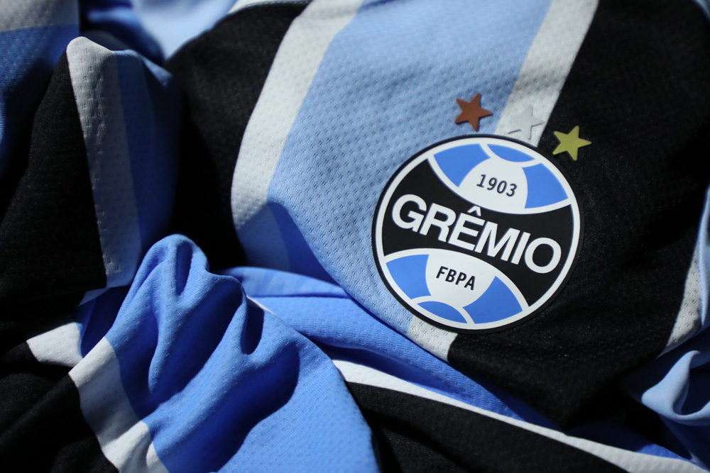

As Melhores Partidas do Grêmio no Século
O Grêmio teve muitos momentos marcantes no últimos 23 anos e aqui neste site estão selecionados alguns desses pontos nessa jornada do legítimo Rei de Copas.
-2 Copas do Brasil em 2001 e 2016
-1 Copa Libertadores em 2017
-9 Campeonatos Gaúchos
-1 Brasileirão Série B
-10 Participações no G4 da Série A

Campeonato Gaúcho

Revisão Completa do Sistema de Freio
Esse procedimento visa identificar o estado das peças do sistema de frenagem.
Grêmio 3-0 Internacional 2018
Esse procedimento visa identificar o estado das peças do sistema de frenagem.
Revisão Completa do Sistema de Freio
Esse procedimento visa identificar o estado das peças do sistema de frenagem.